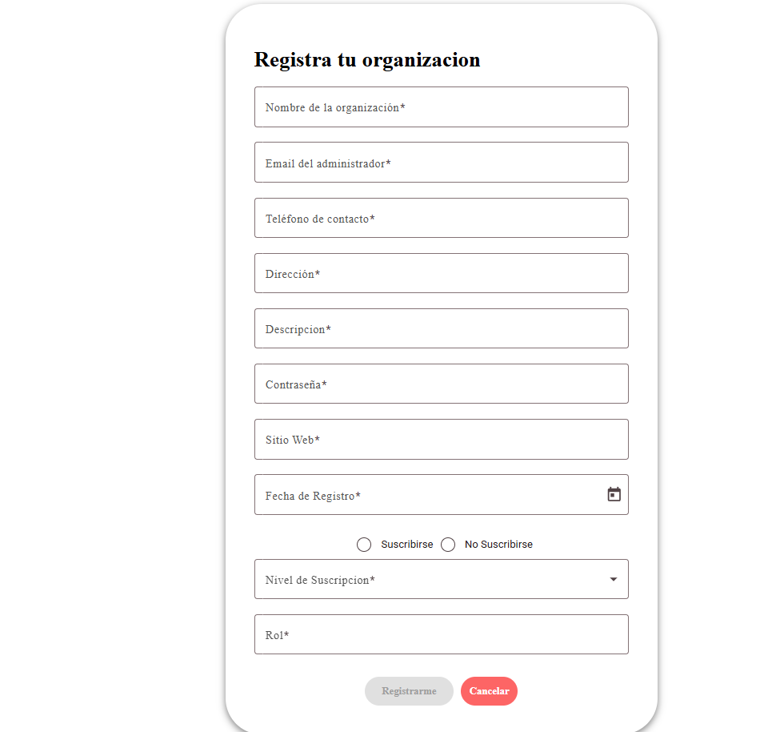

A través de Voluntify, los usuarios pueden:
- Explorar una amplia variedad de oportunidades de voluntariado
- Inscribirse de manera rápida y segura
- Configurar su perfil
Por otro lado, las organizaciones cuentan con herramientas para:
- Publicar y gestionar sus convocatorias de voluntariado
- Llevar un control eficiente de los voluntarios
- Configurar su perfil
Imágenes
Imagen de la página principal
Registro
Registro de usuario
Registro de organizacion
Inicio de sesion
Inicio de sesion de usuario
Página principal del usuario
Al seleccionar un voluntariado se muestra su informacion
Se puede inscribir al voluntariado
Se pueden ver todos los voluntariados disponibles
Se pueden ver todas las organizaciones

Visualizacion del perfil del usuario
Configuracion del perfil del usuario

Inicio de sesion de una organizacion
Página principal de una organizacion
Plan de suscripción
Configuracion del perfil de organizacion
Creacion de un voluntaruiado
Editar los datos de un voluntariado
Lista de inscritos a un voluntariado
Visualizacion del perfil del usuario, se puede aceptar o rechazar la solicitud
Opcion de control de asistencia si se tiene el plan premium
Control de asistencia